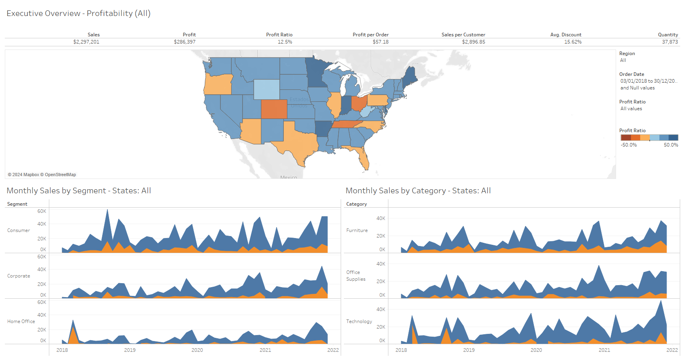

Sales Overview Dashboard using Tableau
In this project, we aim to develop a "Sales Executive Overview Dashboard" utilizing the powerful data visualization capabilities of Tableau.
The primary objective of this project is to provide sales executives with a centralized platform to gain actionable insights into sales performance, customer trends, and product analysis. By leveraging Tableau's interactive visualizations, we seek to empower sales teams to make informed decisions, identify growth opportunities, and optimize sales strategies effectively.
Tools used:
- MS Excel
- Data Manipulation
- Data Cleaning
- Tableau Prep
- Tableau Desktop
Observations:
- This is an interactive dashboard, data will be filtered when selecting a state from the map.
- Monthly Sales by Segments will be filtered by state.
- Monthly Sales by Category will also be filtered by state.
Key findings:
- The average profit ratio is 12.5%.
- The average profit per order is $57.18.
- The average customer spends around $2,896.85.
- The total products sold are 37,873.
- Colorado, Ohio and Tennessee average profit ratio is below 0, making them the states with the worst performance.
- Minnesota, Maine, Arkansas and Indiana are the states with the higher average profit ratio, and subsequently, with the best performance.